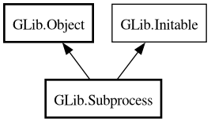

Subprocess
Object Hierarchy:

Description:
[
CCode ( type_id =
"g_subprocess_get_type ()" ) ]
[
Version ( since =
"2.40" ) ]
public class Subprocess :
Object,
Initable
Content:
Properties:
Creation methods:
Methods:
- public bool communicate (Bytes? stdin_buf, Cancellable? cancellable, out Bytes? stdout_buf, out Bytes? stderr_buf) throws Error
- public async bool communicate_async (Bytes? stdin_buf, Cancellable? cancellable, out Bytes? stdout_buf, out Bytes? stderr_buf) throws Error
- public bool communicate_utf8 (string? stdin_buf, Cancellable? cancellable, out string? stdout_buf, out string? stderr_buf) throws Error
- public async bool communicate_utf8_async (string? stdin_buf, Cancellable? cancellable, out string? stdout_buf, out string? stderr_buf) throws Error
- public void force_exit ()
- public int get_exit_status ()
- public unowned string? get_identifier ()
- public bool get_if_exited ()
- public bool get_if_signaled ()
- public int get_status ()
- public unowned InputStream? get_stderr_pipe ()
- public unowned OutputStream? get_stdin_pipe ()
- public unowned InputStream? get_stdout_pipe ()
- public bool get_successful ()
- public int get_term_sig ()
- public void send_signal (int signal_num)
- public bool wait (Cancellable? cancellable = null) throws Error
- public async bool wait_async (Cancellable? cancellable = null) throws Error
- public bool wait_check (Cancellable? cancellable = null) throws Error
- public async bool wait_check_async (Cancellable? cancellable = null) throws Error
Inherited Members:
All known members inherited from class GLib.Object
All known members inherited from interface GLib.Initable